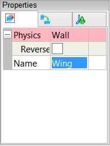
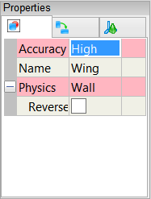

Flow Over an Airfoil
Simulate the flow of air over a NACA 4415 airfoil. Compare the simulation results with experimental data.
Goals
In this tutorial, you will learn how to:
- Import a file into Caedium
- Extrude an airfoil to create a wing
- Specify physical conditions for a simulation. In this case, you will specify the fluid (as air) around the wing, the velocity of the air flowing over the wing, and the properties of the wing's outer surfaces.
- Attach a wake to the wing
- Specify meshing parameters
- Generate a color map (contours)
- Create an XY plot
- Compare the results of your simulation with experimental data
Assumptions
- You have activated the Caedium Builder and Caedium Panel Flow add-ons, or Caedium Professional.
- You are familiar with Caedium essentials.
- You have downloaded the naca-4415-airfoil.brep and the cp_0_15.csv files.
Import the Brep File into Caedium
Select the File Toolbar and click the Import button  . Select Geometry as the file type and navigate to the location of the naca-4415-airfoil.brep file you downloaded. Double-click on naca-4415-airfoil.brep to import the NACA 4415 airfoil into Caedium.
. Select Geometry as the file type and navigate to the location of the naca-4415-airfoil.brep file you downloaded. Double-click on naca-4415-airfoil.brep to import the NACA 4415 airfoil into Caedium.
To see the airfoil, rotate the view (left-click-and-drag the mouse in the View Window) until the airfoil is in the approximate orientation shown below.
Create a 3D Wing
To create a wing from the airfoil, you will extrude the airfoil in the Z-direction. However, to cluster mesh points around the leading edge of the wing, you will first scale the airfoil in the Y-direction. Then, after the extrusion, you will rescale the wing in the Y-direction to restore the original airfoil profile.
You will scale the airfoil relative to the origin. By default, transforms are performed relative to the midpoint of the bounding box that contains the geometry, not relative to the origin. To scale the airfoil relative to the origin, you will first need to create axes at the origin. In this tutorial, the origin is 1/4 of the chord length (0.25m) along the airfoil.
Ensure the Geometry Tool Palette. is selected.
To create the axes at the origin, drag and drop the Others->Axes tool onto the View Window. Double-click sim in the Select dialog and select Done to create axes.
You may need to scroll down through the Geometry Tool Palette list to find the Axes tool.
To scale the airfoil in the Y-direction (to enhance mesh resolution around the leading edge of the airfoil), select the Transforms->Scale. In the Properties Panel set Scale to [1 2 1] and press Enter on the keyboard to apply the changes.
Drag and drop the Scale tool onto the axes you created in the View Window. Select Set Axes. Right-click on an edge of the airfoil in the View Window and select Done to scale the airfoil in the Y-direction.
Drag and drop the Faces->Fix tool onto an edge of the airfoil and select Done to consolidate the transform.
To extrude the profile of the NACA 4415 airfoil to create a 3D wing, select the Volumes->Extrude tool. In the Properties Panel, check that the Direction is set to +Z and the Length is set to 5. Drag and drop the Extrude tool onto an edge of the airfoil in the View Window. Double-click face_1 in the Select dialog and select Done to extrude the airfoil in the Z-direction.
In the Home Toolbar click the Fit-All button to see the whole wing in the View Window.
To restore the original profile of the airfoil, select the Transforms->Scale tool, in the Properties Panel set Scale to [1 0.5 1], and press Enter. Drag and drop the Scale tool onto the axes in the View Window, and select Set Axes. Right-click on an edge of the airfoil in the View Window and select Done to scale the airfoil in the Y-direction.
The original airfoil section will be set to be a symmetry plane later in this tutorial, and we are not interested in the details of the simulation at the wing tip in this example, so in the next step you will delete the 2 end faces of the wing (highlighted below in red and green).
To select the first face to be deleted, right-click on an edge of the original airfoil profile, select the end face (face_4 in this example, shown above in red), click OK in the Select dialog, and then select Select/Deselect.
Right-click on an edge of the second face to be deleted, select the 2nd end face (face_5 in this example, shown above in green), click OK, and then select Delete to delete the 2 faces.
Specify the Properties for the Simulation
Select the Physics Tool Palette.
Select Gases->Air. The Properties Panel will show the default properties for air. To enable incompressible, irrotational, inviscid flow, set the 6 properties under State (Compressible, Heat Transfer, Rotational, Species, Transient, and Viscous) to No (if they are not set to No already).
Drag and drop the Air tool onto the background of the View Window. Select Done to set air as the fluid around the wing.
Drag and drop the Simulation->Linear Velocity tool onto the background of the View Window. Double-click sim in the Select dialog and select Done to set a velocity of air around the wing.
The Properties Panel will show the Physics: Linear Velocity properties by default. To set the value of the linear velocity of the air, set Physics: Linear Velocity->Velocity to [10 0 0] and press Enter on the keyboard.
Define the Symmetry Plane for the Wing
The experimental results that you will compare with your simulation results at the end of this tutorial are for a 2D airfoil. To better simulate a 2D airfoil, you can use a symmetry condition to double the span of the wing. This allows you to get results faster and using less computing resources compared to simulating a longer wing without symmetry.
Drag and drop the Simulation->Symmetry tool onto the background of the View Window. Select Done to specify that your simulation contains a symmetry plane.
To specify the actual symmetry plane for your simulation (the original airfoil section), return to the Properties Panel and check that Physics: Symmetry->Planes is set to Z.
Set the Properties of the Outer Surface of the Wing
Drag and drop the Faces->Wall tool onto the leading edge of the wing. Double-click face_2 (or whichever face is first in the list) in the Select dialog. To select the 2nd face, select Select/Deselect and then right-click on the leading edge. Double-click face_3 (or whichever face is second in the list) in the Select dialog. Select Group to create a group of the upper and lower faces of the wing, and then select Done to create walls on the upper and lower surfaces of the wing.
A wall is a solid surface through which fluid cannot flow.
In the Properties Panel, change the Name of the group to Wing, and press Enter.

Attach a Wake onto the Trailing Edge of the Wing
To simulate lift using a panel method, you must identify where the flow leaves the trailing edge of the wing by applying a wake model.
Drag and drop the Edges->Wake tool onto the trailing edge of the wing. In the Select dialog, double-click on edge_9 (or whichever edge is the trailing edge in your example) and select Done to add the wake.
Specify Meshing Parameters
Drag and drop the Special->Accuracy tool onto the leading edge of the wing. Double-click Wing in the Select dialog and select Done to set the accuracy of the calculation on the upper and lower faces of the wing.
To set the value of the accuracy, select High for the Accuracy in the Properties Panel.

Calculate the Pressure Coefficient on the Wing
Select the Results Tool Palette.
Drag and drop the Scalar Fields->Cp (pressure coefficient) tool onto the leading edge of the wing in the View Window. Double-click Wing in the Select dialog and select Color Map to create contours of pressure coefficient on the wing.
The pressure coefficient is a dimensionless number that relates pressure changes to the surrounding field pressure.
Caedium will perform the simulation. When the calculation is complete, you will see the wake appear in the View Window.
Left-click-and-drag the mouse in the View Window to see the full wake.
Ideally, the wake should extend 10 or more chord lengths behind the wing. Caedium allows you to specify both the number of wake elements and the time step for the elements in order to vary the total length of the wake. To specify the number of elements and the time step, right-click on the View Window, double-click on sim in the Select dialog, and select Properties. In the Properties Panel, select the Simulation tab, then expand the Substance: Air->Solver: Panel Flow->Wake properties. To increase the number of wake elements, enter a larger number for Iterations. A larger number of elements will provide more accuracy for your simulation, but the simulation will take longer to perform. Time Step is the time step per wake element, i.e., the time between the start of each new row of elements.
Plot Pressure Coefficient on the Airfoil Versus Distance Along the Chord
The leading edge of the airfoil does not correspond to the origin. In fact, 1/4 of the chord is located in the negative X-direction. To plot the pressure coefficient versus distance along the chord, you need to take the following steps:
- Create a scalar called 1/4 Chord (0.25m).
- Add 1/4 Chord to the X-position value to find the distance along the chord.
- Create an XY plot of pressure coefficient versus distance along the chord.
Create a Scalar Called 1/4 Chord (0.25m)
Select the New Toolbar and click the Result button .
In the Create Result dialog, select the Constant tab. For Units, select Length.
Click Create to create a scalar.
In the Results Tool Palette, select Scalar Variables->Scalar (the scalar variable you just created). Click on it again to make its name editable, and change Scalar to 1/4 Chord.
In the Properties Panel, set the Value of 1/4 Chord to 0.25 and press Enter on the keyboard.
Create Chord
In the Create Result dialog, select the Binary tab. Select Add from the list.
In the Results Tool Palette, select Vector Fields->XYZ. Verify that X is selected as the Scalar in the Properties Panel. Drag and drop Vector Fields->XYZ onto the left-hand target in the Create Result dialog. Select Scalar to specify the X-position as the left-hand variable for the equation.
Drag Scalar Variables->1/4 Chord from the Results Tool Palette and drop it onto the right-hand target in the Create Result dialog.
Click Create to create the scalar field chord. In the Results Tool Palette, select Scalar Fields->(XYZ:X + 1/4 Chord), rename it Chord, and press Enter.
Close the Create Result dialog.
Create an XY Plot of Pressure Coefficient Versus Distance Along the Chord
Drag and drop the Scalar Fields->Cp tool onto the top edge of the original airfoil section in the View Window. Select edge_5 (or whichever edge is the top edge of the original airfoil section in your example) in the Select dialog (the edge will be highlighted in the View Window), and click OK. Select Select/Deselect from the menu and then right-click on the bottom edges of the original airfoil section. Select edge_7 (or whichever edge is the bottom edge of the original airfoil section in your example), click OK and select XY Plot to create an XY plot of pressure coefficient versus X-position.
To plot the pressure coefficient versus distance along the chord, drag and drop Scalar Fields->Chord onto the background of the Cp Plot Window. Select X Axis to display values of distance along the chord along the X-axis of the XY plot.
Compare Experimental Data and Caedium Simulation Pressure Coefficients
To compare the pressure coefficient values from your Caedium simulation with the experimental values, you need to plot both data sets on the same XY plot.
Import the Experimental Pressure Coefficient Data
Select the File Toolbar and click the Import button . Select the location of the plot data you saved at the beginning of this tutorial. For the file type, select Plot Series (*.csv). Double-click on cp_0_15.csv to import it into Caedium.
The plot series will be visible in the Results Tool Palette, under Imported.
Plot the Imported Data and the Caedium Simulation Data on the Same XY Plot
Select the Cp Plot Window. Drag and drop the Imported->cp_0_15.csv tool onto the Plot Window and select Done to plot the experimental data on the same XY plot as the simulation data.
In the Properties Panel, expand the Y Axis property. Turn on the Reverse property to reverse the direction of the Y-axis.
In the Plot Window, select ExpLower and ExpUpper in the Plot Legend. (First, click on ExpLower, then hold down the Control (or ctrl) key on your keyboard and select ExpUpper. Both words should now be highlighted.) In the Properties Panel, set Line to None, and set Symbol to Circle Open.
In the Plot Window, select the two words that say "edge" in the Plot Legend (edge_3 and edge_5 in this example) so that both words are highlighted. In the Properties Panel, set Symbol to None.
Notice the good agreement between the computational and experimental data.
For a more detailed study of this airfoil, see our NACA 4415 Airfoil Calculation.
Feedback
Questions? Ideas? Problems?

Comments
Error when applying Cp
when i click and drag Cp onto the leading edge and select the airfoil group, all options are grayed out and I cannot select color map. Any help will be appreciated!
Have you applied the Substance?
Have you successfully applied the Substance (Air) to the simulation? i.e., Have you dragged and dropped the Substance onto the background?
Prior to using the Substance you need to set its properties as described in section "Specify the Properties for the Simulation".